CTIN 290 · Digital Media Workshop · Group Project 1
Three worked examples at the top of the rubric, built so the room can see what a 5 looks like in each of the four criteria before it starts. File due Thursday 1 October, 5:00 PM PT. Presentations Monday 5 October, five minutes per team, everyone speaks.
Board 1 of 3
A two-person alpine climb where the rope is never cosmetic. You are tied to another player for the whole run, your weight is on their anchor and theirs is on yours, and there is no mechanic for going it alone.
How this team read the six words. Collaboration as physical consequence. The six words read as: what happens to you happens to me, measured in meters of rope.
What this board is not. Not a survival game with a partner bolted on. There is no solo mode to balance against, because the rope is the game.
25 images · 9 of the world · 4 of the screen · 12 curated from the public domain · the brief asks for 20 to 40
Measured from the 13 generated plates, world and screen together, which define how this game looks. Percentages are the share of pixels each color owns.
Measured from the 12 curated works. These skew to paper and age, and that is the honest reading: they are on the board for form, motif and composition, not for color.
The whole premise in one frame. Two people, an enormous indifferent world, and one orange line that means whatever happens to you happens to me. The figures are deliberately small: this is not a game about heroes, it is a game about consequence.
Generated Recraft V4.1 via Higgsfield, 21 September 2026. Palette locked to #E8EDF2, #6E7378, #D95F18, #4A3F6B, #F2B879 at generation time. Prompt: “Documentary alpine photograph: two climbers roped together on a knife-edge granite ridge at dusk, tiny against an enormous cold sky, a single bright orange rope the only line connecting them, deep blue shadow in the couloirs, last amber light catching the rock edge. Film grain, natural light, no text.”
Texture reference for the single most-handled object in the game. If the rope does not look used, the relationship does not look used either.
Generated Recraft V4.1 via Higgsfield, 21 September 2026. Palette locked to #E8EDF2, #6E7378, #D95F18, #4A3F6B, #F2B879 at generation time. Prompt: “Extreme close-up photograph of a weathered hand gripping a frayed orange climbing rope, ice crystals caught in the fibers, cracked knuckles, cold overcast light, very shallow depth of field, granite gray background falling out of focus.”
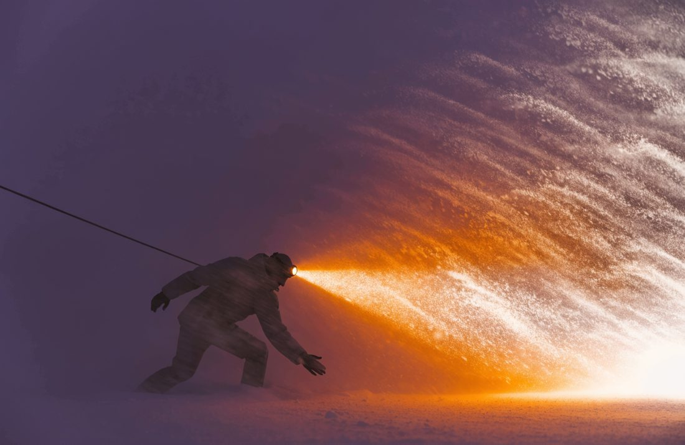
The failure state. One light, one body, and the rope running out of frame into weather. The other player is out there and you cannot see them, which is the exact feeling the mechanic has to produce.
Generated Recraft V4.1 via Higgsfield, 21 September 2026. Palette locked to #E8EDF2, #6E7378, #D95F18, #4A3F6B, #F2B879 at generation time. Prompt: “A single headlamp beam cutting through a whiteout blizzard, the silhouette of one figure leaning hard into the wind while a rope disappears into blowing snow behind them, violet dusk, almost abstract, mostly empty frame.”
The knot is the save icon, the handshake and the contract. Shot clean against snow so it can be read at a glance in UI, on a loading screen, or on a poster.
Generated Recraft V4.1 via Higgsfield, 21 September 2026. Palette locked to #E8EDF2, #6E7378, #D95F18, #4A3F6B, #F2B879 at generation time. Prompt: “Macro photograph of a figure-eight knot tied in bright orange climbing rope against fresh white snow, crisp shadow, absolute clarity, the whole frame about one knot.”
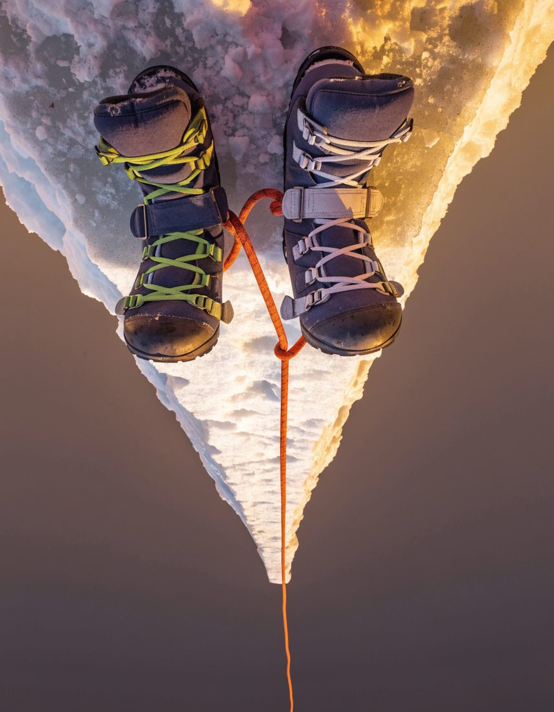
Overhead framing reference. Two pairs of boots, one ledge, no room to step around each other. Blocking that forces cooperation instead of asking for it.
Generated Recraft V4.1 via Higgsfield, 21 September 2026. Palette locked to #E8EDF2, #6E7378, #D95F18, #4A3F6B, #F2B879 at generation time. Prompt: “Overhead photograph looking straight down at two pairs of mountaineering boots on a narrow snow ledge, an orange rope running between them and off the edge into gray void. Vertigo, cold light.”
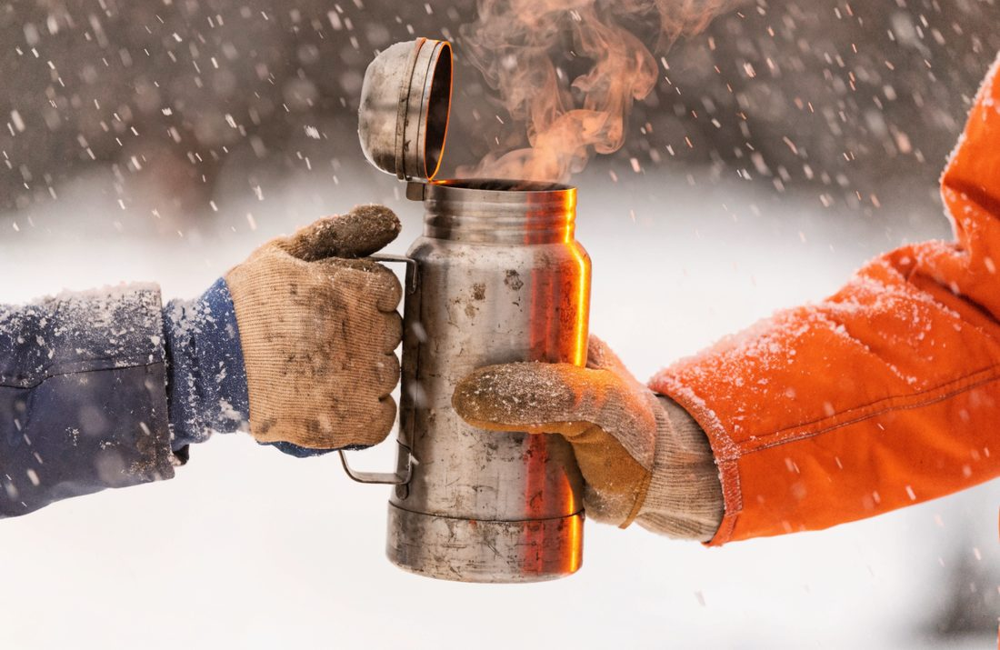
The warmth in a cold palette, and the only unforced act of care on this board. Every survival game has a thermos; this one is about who is holding it.
Generated Recraft V4.1 via Higgsfield, 21 September 2026. Palette locked to #E8EDF2, #6E7378, #D95F18, #4A3F6B, #F2B879 at generation time. Prompt: “Two gloved hands passing a battered steel thermos between them in falling snow, frost on jacket shoulders, steam rising from the open lid, cold gray light with one warm amber note.”
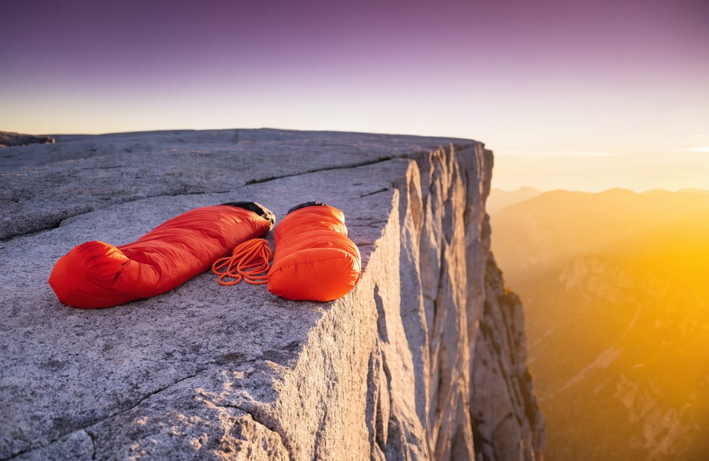
The rest beat. A game that is only tension is exhausting, so the board needs the morning after: two bags, a coiled rope, an enormous drop, and nothing happening.
Generated Recraft V4.1 via Higgsfield, 21 September 2026. Palette locked to #E8EDF2, #6E7378, #D95F18, #4A3F6B, #F2B879 at generation time. Prompt: “An exposed bivouac ledge at first light, two sleeping bags side by side on bare granite, an orange rope coiled between them, violet sky going to amber at the horizon, enormous drop below.”
Wear as storytelling. A furred sheath is a record of everything the rope has already survived with you, which is backstory told without a cutscene.
Generated Recraft V4.1 via Higgsfield, 21 September 2026. Palette locked to #E8EDF2, #6E7378, #D95F18, #4A3F6B, #F2B879 at generation time. Prompt: “Macro photograph of a climbing rope's worn sheath, fibers furred with use, one bright orange strand against gray, extreme detail. Pure texture.”
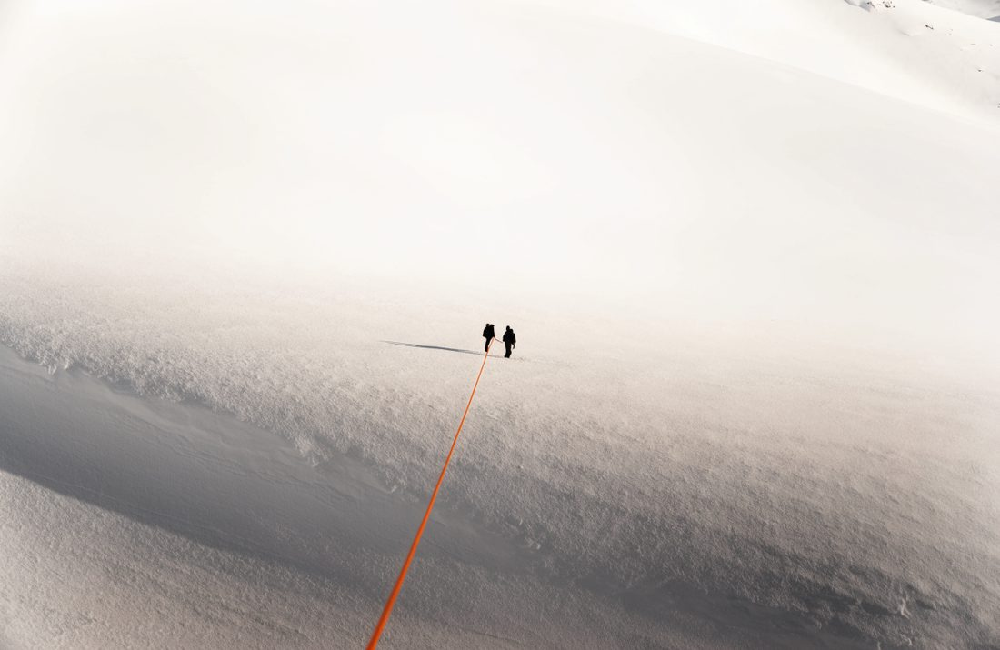
Scale check and title-card candidate. If a player can still find the two figures in three seconds, the composition works at any size.
Generated Recraft V4.1 via Higgsfield, 21 September 2026. Palette locked to #E8EDF2, #6E7378, #D95F18, #4A3F6B, #F2B879 at generation time. Prompt: “Two tiny figures crossing an enormous white snowfield, roped together, seen from very far away so the human scale nearly disappears. Mostly empty frame, cold gray-white, one thread of orange.”
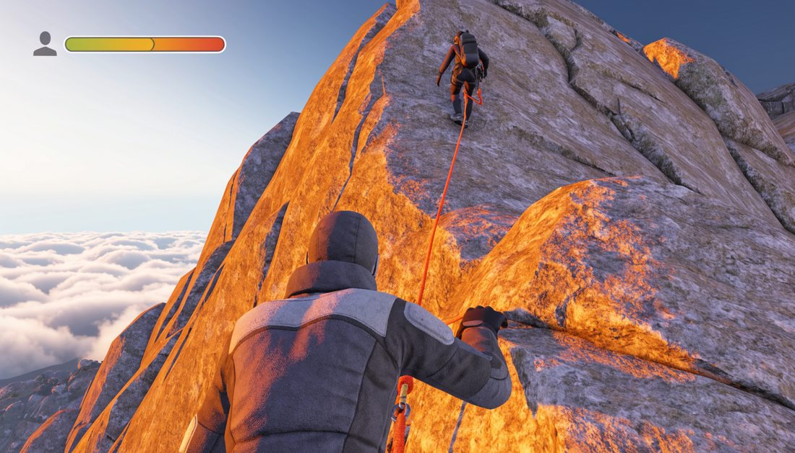
What the player actually looks at. Third person, partner ahead on the rope, and the only meter on screen is THEIRS. You are never shown your own stamina, so the single piece of information the interface gives you is how the other person is doing.
In-game Recraft V4.1 via Higgsfield, 21 September 2026. Palette locked to #E8EDF2, #6E7378, #D95F18, #4A3F6B, #F2B879 at generation time. Prompt: “In-engine third person game screenshot, over the shoulder on a granite ridge at dusk, your climbing partner ahead of you on the orange rope, minimal HUD showing only ONE stamina bar for the other player and not for you.”
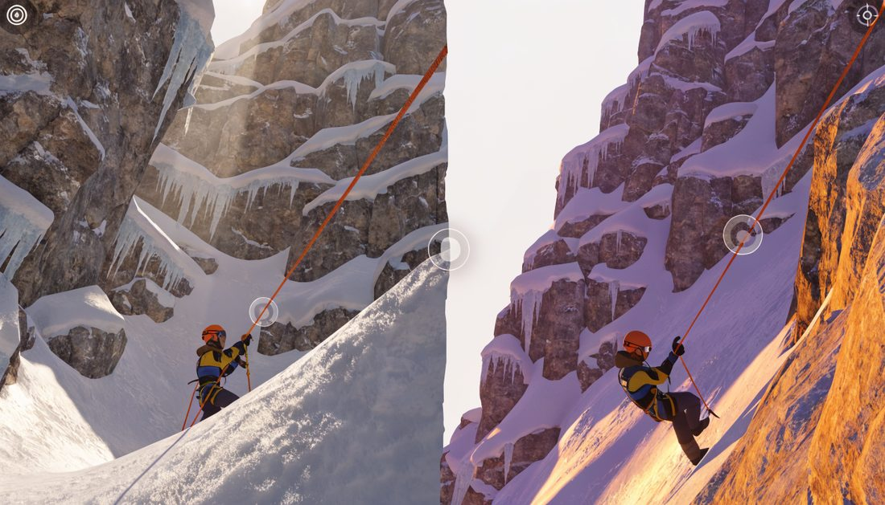
Split screen, and the argument for why this game is not solo. Two views of one couloir from two heights, with the rope crossing the seam between the panels. The divider is the only place the two players' worlds touch, which is also true of the fiction.
In-game Recraft V4.1 via Higgsfield, 21 September 2026. Palette locked to #E8EDF2, #6E7378, #D95F18, #4A3F6B, #F2B879 at generation time. Prompt: “Two player split screen game capture, a vertical divider down the middle, left view looking up a snow couloir, right view looking down the same couloir from higher up, an orange rope crossing the seam between the two views.”
The rope is the readout. It glows hot where the load is and stays dull where it is slack, so tension is read off the world instead of off a bar in the corner. If one diegetic idea survives into the build, it should be this one.
In-game Recraft V4.1 via Higgsfield, 21 September 2026. Palette locked to #E8EDF2, #6E7378, #D95F18, #4A3F6B, #F2B879 at generation time. Prompt: “Diegetic game interface close-up: a climbing rope in-engine that changes color along its length under load, glowing hot orange where tension is highest and dull gray where slack. The object IS the readout.”
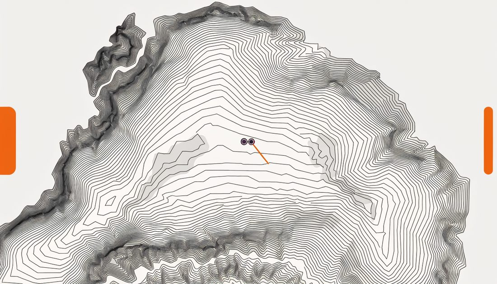
Route screen. Contour lines, two markers, and the short line between them. Deliberately the least detailed image on the board, because the map is for agreeing on a plan, not for admiring.
In-game Recraft V4.1 via Higgsfield, 21 September 2026. Palette locked to #E8EDF2, #6E7378, #D95F18, #4A3F6B, #F2B879 at generation time. Prompt: “Game map screen, top-down stylized route diagram of a mountain face drawn as contour lines, two small player markers joined by a short orange line, clean minimal cartography interface.”
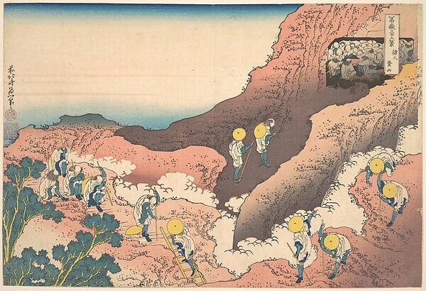
The anchor of this board and the oldest answer to the brief on it. Hokusai draws a rope of people on Fuji, roped in single file, each one's footing depending on the one below. Two hundred years before co-op had a name, this is the picture of it.
Curated Katsushika Hokusai, ca. 1830 to 32. Woodblock print; ink and color on paper. The Metropolitan Museum of Art, Open Access. metmuseum.org/art/collection/search/55281
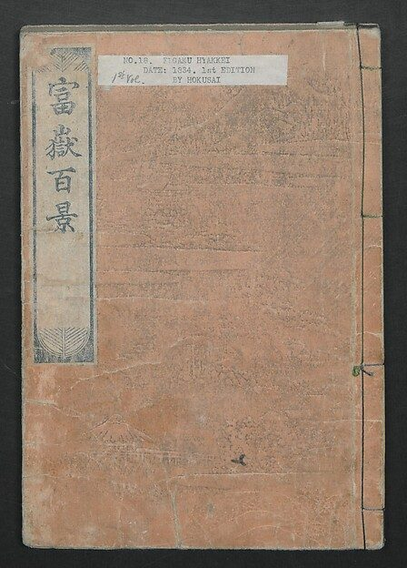
Fuji seen through weather and structure rather than head-on. The lesson for our environment art: the mountain is more frightening when it is partly hidden.
Curated Katsushika Hokusai 葛飾北斎, 1834. Woodblock print; ink on paper. The Metropolitan Museum of Art, Open Access. metmuseum.org/art/collection/search/57551
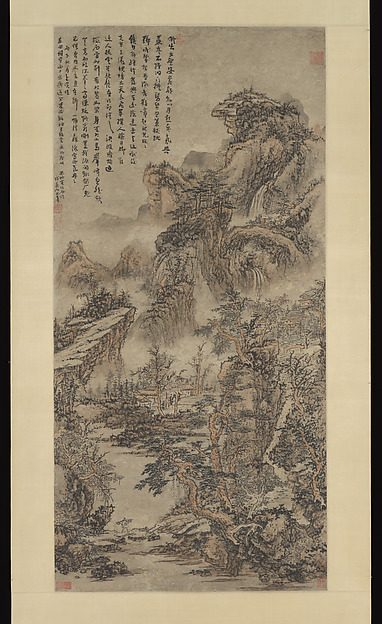
Dusk in ink. This is where the violet in our palette comes from, and it proves the color can carry menace without going black.
Curated Kuncan, dated 1666. Hanging scroll; ink and color on paper. The Metropolitan Museum of Art, Open Access. metmuseum.org/art/collection/search/39557
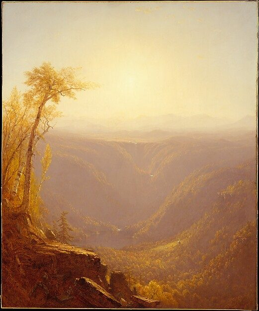
Gifford puts one shaft of amber into an otherwise cold gorge, and your eye goes straight to it. That is exactly the job our orange rope has to do in every frame.
Curated Sanford Robinson Gifford, 1862. Oil on canvas. The Metropolitan Museum of Art, Open Access. metmuseum.org/art/collection/search/10946
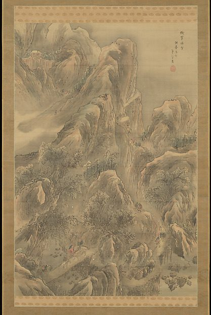
Vertical composition, almost no midground. Useful for the climbing sections, where the camera has to sell height without a horizon.
Curated Yokoi Kinkoku, ca. 1830. Hanging scroll; ink and color on silk. The Metropolitan Museum of Art, Open Access. metmuseum.org/art/collection/search/897130
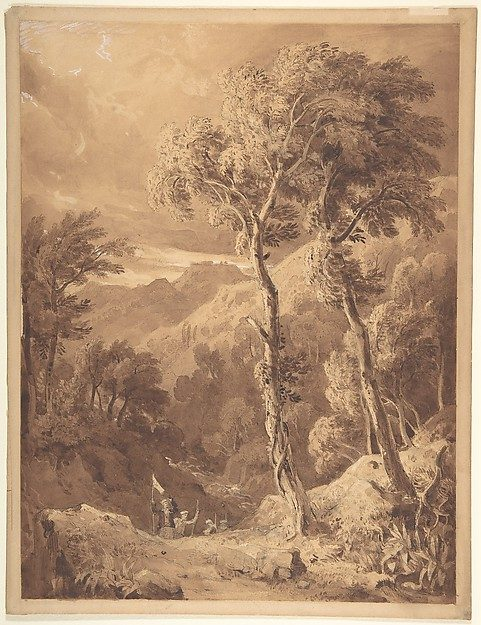
Travellers rendered as punctuation, not subject. Confirms that shrinking the players makes the world read as dangerous rather than makes the players read as unimportant.
Curated Hugh William Williams, 1818 to 29. Pen and brown ink, brush and brown wash, over graphite, with touches of gouache (bodycolor). The Metropolitan Museum of Art, Open Access. metmuseum.org/art/collection/search/384513
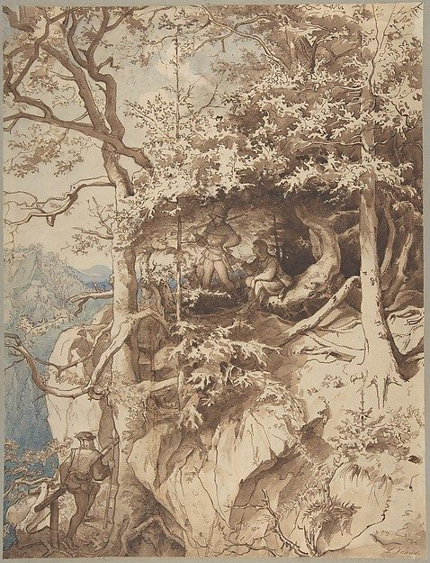
Two figures on an outlook, sharing a view and a moment of not-climbing. Reference for the idle animation and the camera distance we want when nothing is going wrong.
Curated August Leopold Venus, ca. 1870. Pen and brown ink, brush and brown ink, brush and blue watercolor. The Metropolitan Museum of Art, Open Access. metmuseum.org/art/collection/search/366226
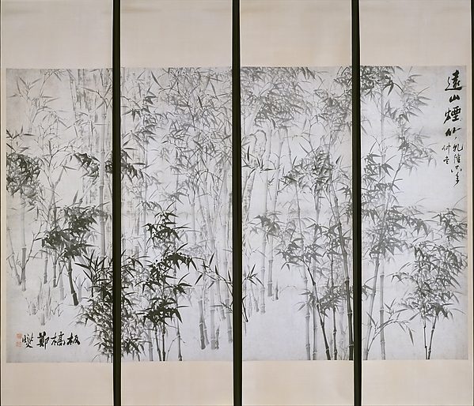
Negative space doing structural work. Half this image is nothing, and the nothing is what makes the distance legible.
Curated Zheng Xie, dated 1753. Set of four hanging scrolls; ink on paper. The Metropolitan Museum of Art, Open Access. metmuseum.org/art/collection/search/44620
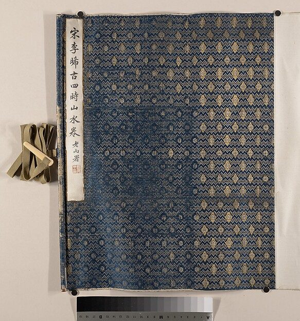
Four seasons in one continuous surface. If we ever show the mountain changing across a campaign, this is the model for keeping it recognizably the same place.
Curated Unidentified artist, 15th century. Handscroll; ink and color on silk. The Metropolitan Museum of Art, Open Access. metmuseum.org/art/collection/search/45673
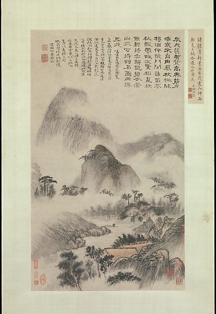
Rock rendered as gesture rather than geology. A reminder that our cliff faces should be readable shapes before they are accurate surfaces.
Curated Shitao (Zhu Ruoji), dated 1705. Hanging scroll; ink and color on paper. The Metropolitan Museum of Art, Open Access. metmuseum.org/art/collection/search/49183
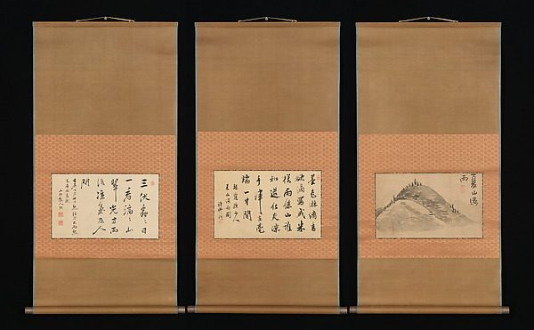
Image and text sharing one field. We want route notes and belay calls to sit in the world like this, not in a floating HUD panel.
Curated Ike no Taiga, 18th to 19th century. Album leaves mounted as hanging scrolls; ink on paper. The Metropolitan Museum of Art, Open Access. metmuseum.org/art/collection/search/670540
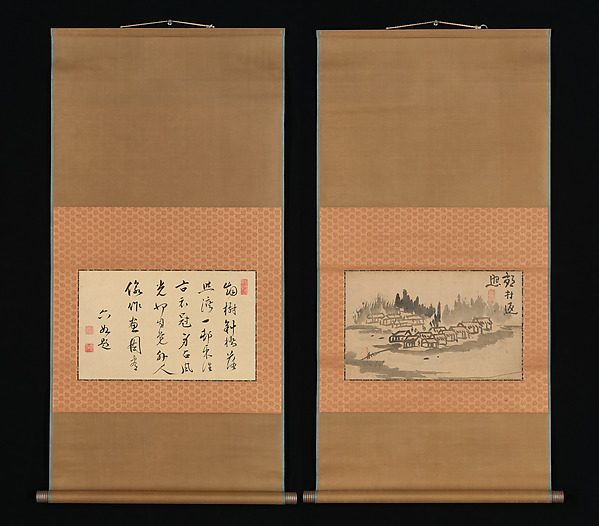
Evening glow in a village, which is what the summit is for. The board needs one image of the warm thing you are climbing away from.
Curated Ike no Taiga, late 18th to early 19th century. Album leaves mounted as hanging scrolls; ink on paper. The Metropolitan Museum of Art, Open Access. metmuseum.org/art/collection/search/670542
Board 2 of 3
One narrow family restaurant, one Sunday service, three generations on the line. Nobody in this kitchen can plate, fire and run a pass at the same time, and the game never lets you try.
How this team read the six words. Collaboration as timing. The six words read as: I can do my part and it is still worthless if it arrives at the wrong second.
What this board is not. Not a cooking game about recipes. The food is never the puzzle. The handoff is.
29 images · 10 of the world · 4 of the screen · 15 curated from the public domain · the brief asks for 20 to 40
Measured from the 14 generated plates, world and screen together, which define how this game looks. Percentages are the share of pixels each color owns.
Measured from the 15 curated works. These skew to paper and age, and that is the honest reading: they are on the board for form, motif and composition, not for color.
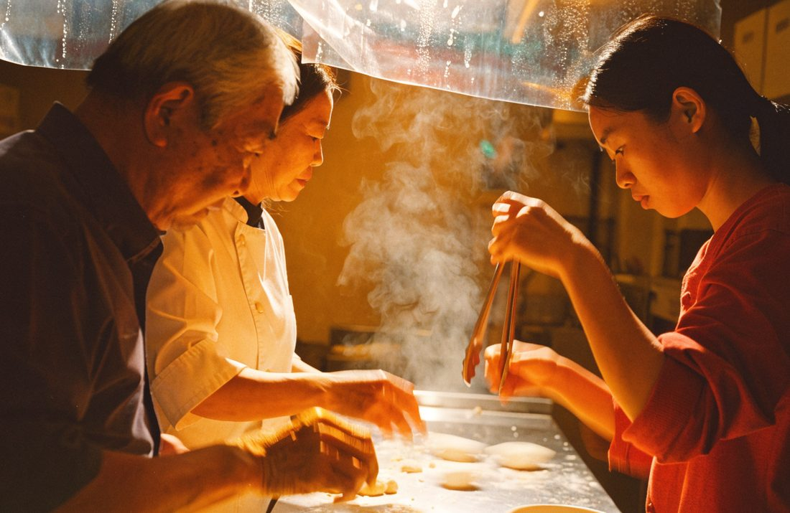
Three generations, one counter, nobody waiting their turn. The brief says people needing each other; this is what that looks like when it is ordinary and unremarked.
Generated Recraft V4.1 via Higgsfield, 21 September 2026. Palette locked to #C8811F, #F2E8D5, #8C9B8F, #B3341F, #5A3A22 at generation time. Prompt: “Warm documentary photograph of three generations working one narrow restaurant kitchen counter together, flour dust and steam in tungsten light, hands in motion, faces half turned, cramped and alive. Shot on film, natural light.”
The handoff, frozen one beat before it completes. This exact instant is the core mechanic, and the whole game is a variation on whether the plate makes it across.
Generated Recraft V4.1 via Higgsfield, 21 September 2026. Palette locked to #C8811F, #F2E8D5, #8C9B8F, #B3341F, #5A3A22 at generation time. Prompt: “Close-up photograph of two pairs of hands passing a heavy ceramic plate across a stainless steel kitchen pass, steam rising between them, warm ochre light against cold steel, the exact instant before the handoff completes.”
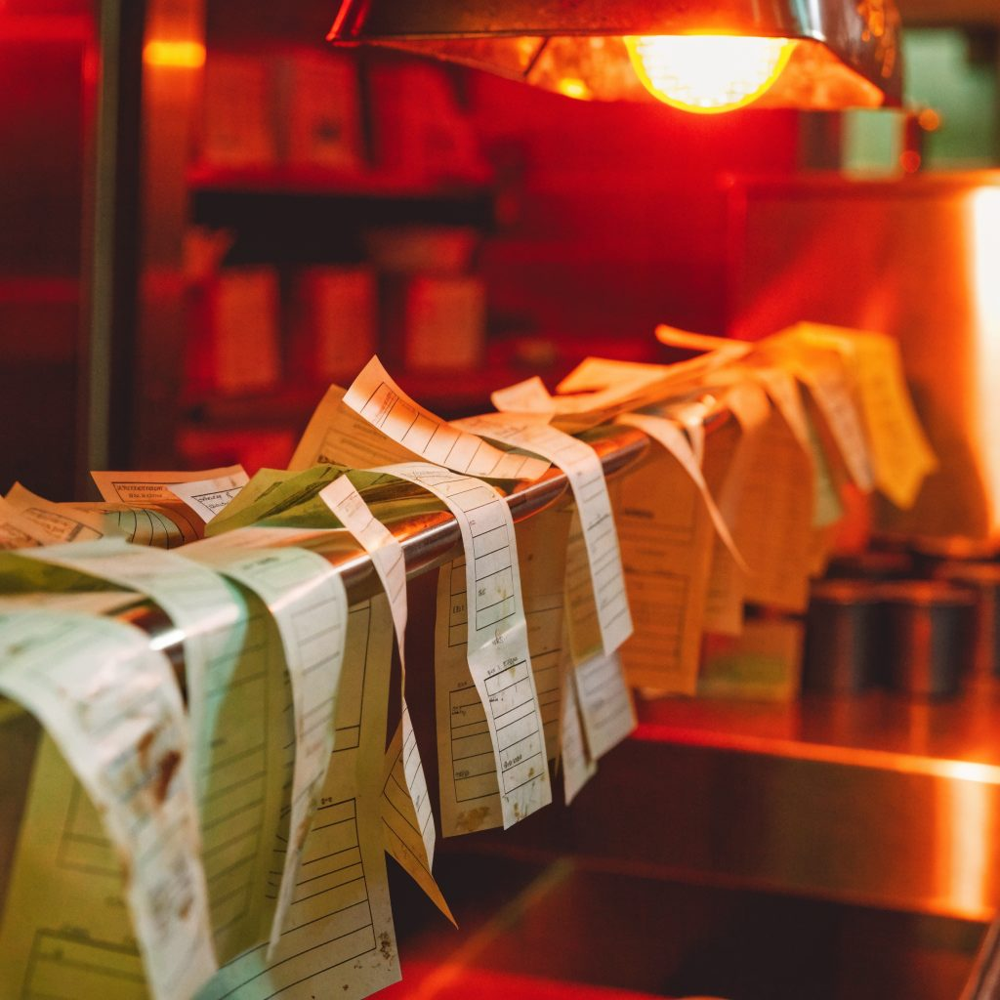
The pressure gauge. A rail of tickets is a queue, a clock and an antagonist at once, and it is the only enemy this game has.
Generated Recraft V4.1 via Higgsfield, 21 September 2026. Palette locked to #C8811F, #F2E8D5, #8C9B8F, #B3341F, #5A3A22 at generation time. Prompt: “A crowded rail of curling paper tickets under an orange heat lamp in a restaurant kitchen, grease-marked, shallow focus, the lamp glow doing all the lighting.”
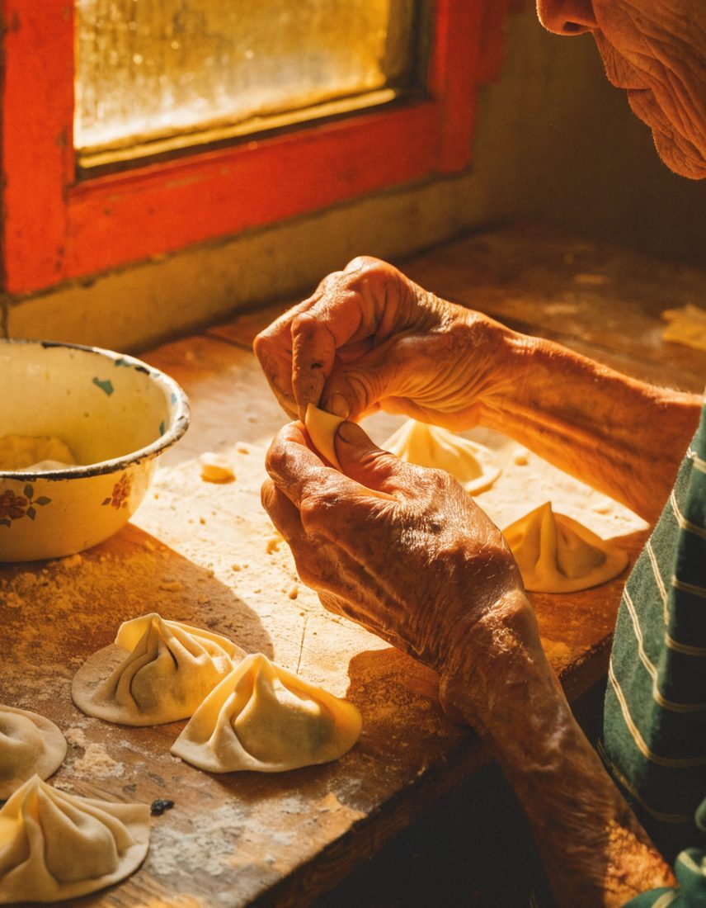
Skill as inheritance. The hands are the interface, the board is worn to the shape of the work, and nobody in frame is looking at what they are doing.
Generated Recraft V4.1 via Higgsfield, 21 September 2026. Palette locked to #C8811F, #F2E8D5, #8C9B8F, #B3341F, #5A3A22 at generation time. Prompt: “An elderly woman's hands folding dumplings on a worn wooden board, ochre light from a single window, flour, a chipped enamel bowl, decades of practice visible in the fingers.”
Tool wall as character sheet. Every implement here was chosen by somebody and kept by somebody else.
Generated Recraft V4.1 via Higgsfield, 21 September 2026. Palette locked to #C8811F, #F2E8D5, #8C9B8F, #B3341F, #5A3A22 at generation time. Prompt: “A wall of worn wooden spoons, ladles and scarred pans hanging above a restaurant stove, decades of use, warm ochre light, shallow depth of field.”
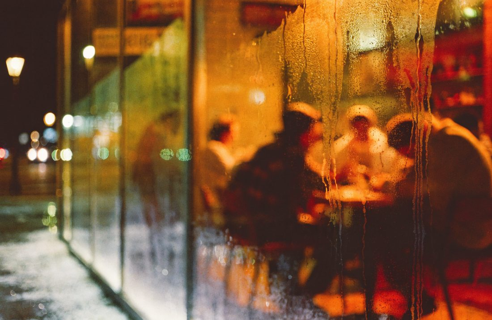
The outside view, and the emotional argument for the game. Warmth is legible only from the cold street; this is the establishing shot and probably the key art.
Generated Recraft V4.1 via Higgsfield, 21 September 2026. Palette locked to #C8811F, #F2E8D5, #8C9B8F, #B3341F, #5A3A22 at generation time. Prompt: “Condensation running down a restaurant window at night seen from the cold street outside, warm interior glow, blurred silhouettes of people eating together inside. Melancholy and warm at once.”
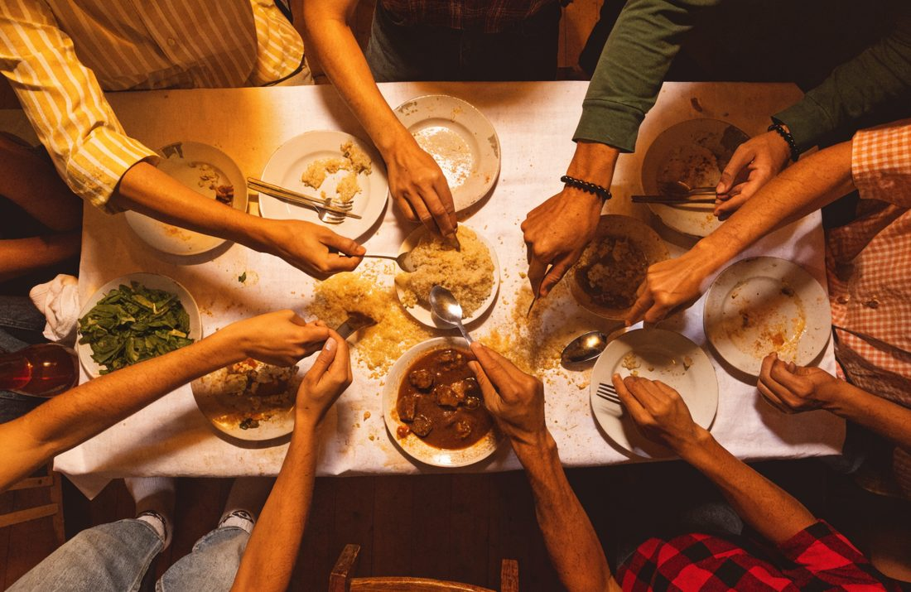
Overhead, many hands, one table, motion blur where the reaching happens. The reward screen. Everything in the kitchen exists to produce this.
Generated Recraft V4.1 via Higgsfield, 21 September 2026. Palette locked to #C8811F, #F2E8D5, #8C9B8F, #B3341F, #5A3A22 at generation time. Prompt: “Overhead photograph of a crowded family meal table, many hands reaching across at once for shared dishes, chipped plates, spilled rice, warm tungsten light. Motion blur in the hands.”
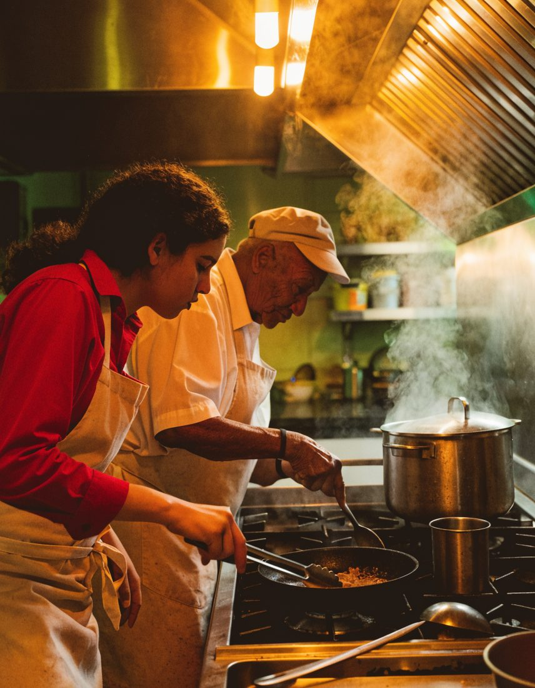
Two cooks, one stove, no eye contact, perfect timing. This is the skill ceiling expressed as an image: collaboration so practiced it stopped needing communication.
Generated Recraft V4.1 via Higgsfield, 21 September 2026. Palette locked to #C8811F, #F2E8D5, #8C9B8F, #B3341F, #5A3A22 at generation time. Prompt: “A young cook and a much older cook working shoulder to shoulder at a hot stove, neither looking at the other, perfectly timed around each other, steam and tungsten light, documentary photograph.”
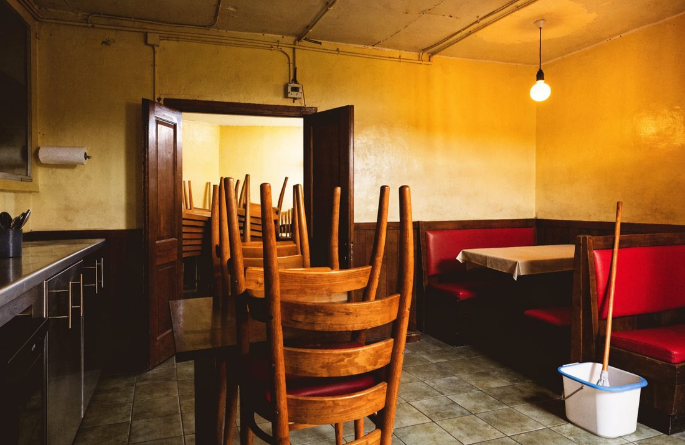
After service. A game about a working kitchen needs its empty frame, the one that says the day is over and you all survived it.
Generated Recraft V4.1 via Higgsfield, 21 September 2026. Palette locked to #C8811F, #F2E8D5, #8C9B8F, #B3341F, #5A3A22 at generation time. Prompt: “A small family restaurant after closing, chairs up on tables, one warm light still on over an empty booth, mop bucket on the tile, the quiet after service. Warm ochre and tile green.”
Pure texture, decades deep. Our surfaces should carry this much history, because in this game the set is the save file.
Generated Recraft V4.1 via Higgsfield, 21 September 2026. Palette locked to #C8811F, #F2E8D5, #8C9B8F, #B3341F, #5A3A22 at generation time. Prompt: “Macro photograph of a scarred wooden cutting board, knife marks layered over decades, flour in the grooves, warm raking light. Pure texture, still life.”
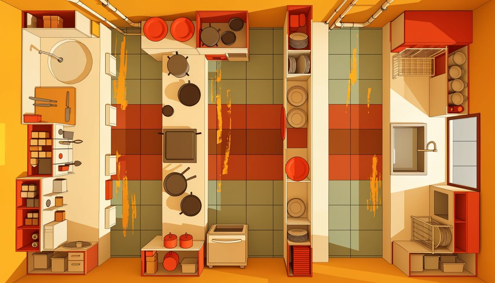
The kitchen as a playable floor plan. Stations separated far enough that no one player can cover two of them, which is the level design doing the collaboration rather than the script asking for it.
In-game Recraft V4.1 via Higgsfield, 21 September 2026. Palette locked to #C8811F, #F2E8D5, #8C9B8F, #B3341F, #5A3A22 at generation time. Prompt: “Top-down game level layout of a narrow restaurant kitchen in warm stylized 3D, stations clearly separated, prep, stove, pass, dish, with worn walking paths between them.”
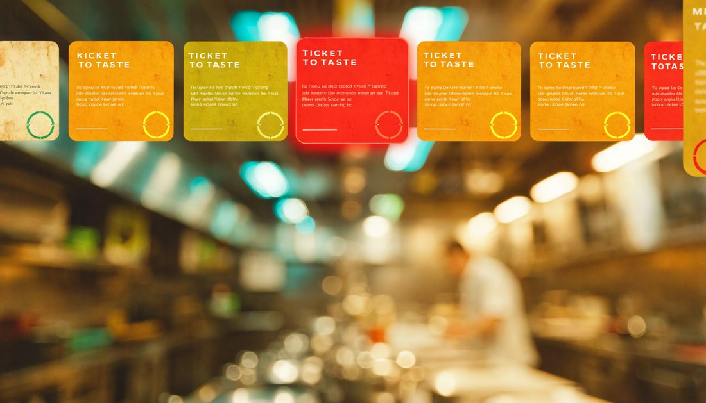
Order tickets as the HUD, each with a draining ring, one already red. The antagonist of this game is a queue, so the queue gets the top of the screen.
In-game Recraft V4.1 via Higgsfield, 21 September 2026. Palette locked to #C8811F, #F2E8D5, #8C9B8F, #B3341F, #5A3A22 at generation time. Prompt: “Game HUD mockup: a row of order tickets across the top of the screen as cards, each with a small draining timer ring, one card glowing red as it expires, in-game kitchen blurred behind.”
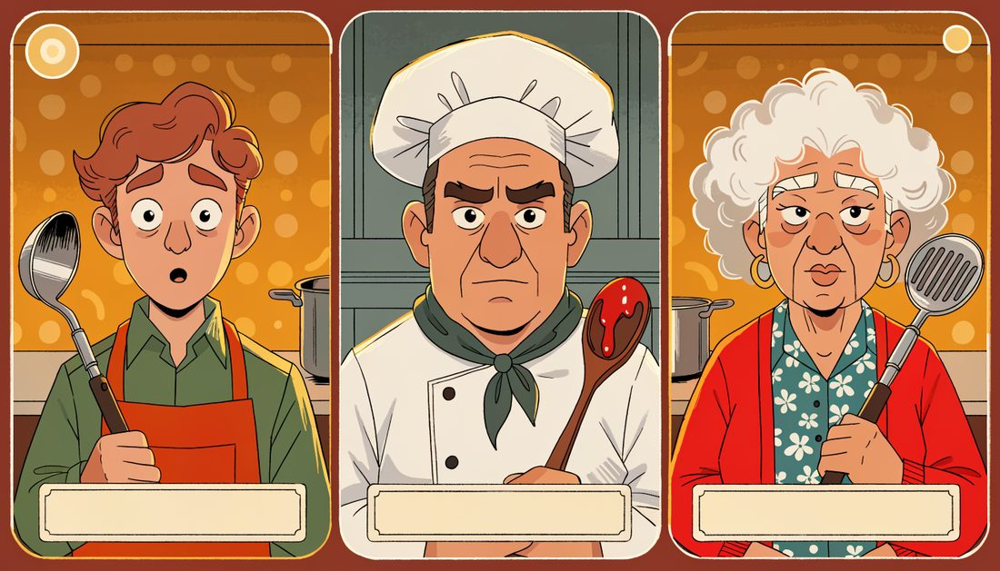
Character select, three generations as three roles. Note the style break: this is drawn and the rest of the board is photographic. It is here for the STRUCTURE, three distinct bodies with three distinct reaches, and it is a warning about what happens if the art direction drifts toward cartoon.
In-game Recraft V4.1 via Higgsfield, 21 September 2026. Palette locked to #C8811F, #F2E8D5, #8C9B8F, #B3341F, #5A3A22 at generation time. Prompt: “Character select screen for a game, three playable cooks side by side representing three generations of one family, stylized portrait panels with empty label plates.”
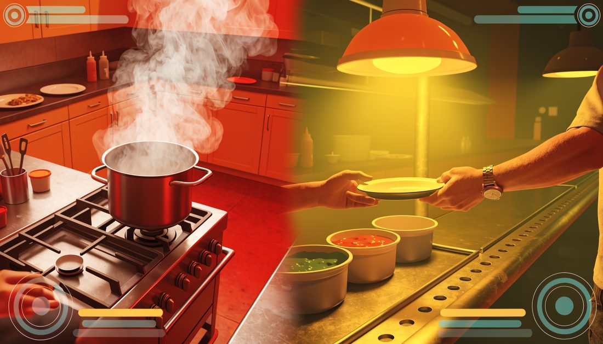
Split screen inside one room. Two players, two stations, and the same plate visible at the edge of both views as it crosses. The seam between the panels is where the game happens.
In-game Recraft V4.1 via Higgsfield, 21 September 2026. Palette locked to #C8811F, #F2E8D5, #8C9B8F, #B3341F, #5A3A22 at generation time. Prompt: “Two player split screen game capture inside one kitchen, left view at the stove in heavy steam, right view at the pass under a heat lamp, the same plate visible at the edge of both views as it is handed across.”
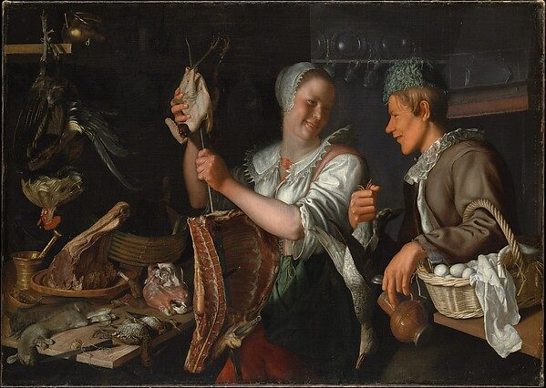
Wtewael puts the work in the foreground and the household behind it, which is precisely our camera problem: the labor is the subject and the family is the reason.
Curated Peter Wtewael, 1620s. Oil on canvas. The Metropolitan Museum of Art, Open Access. metmuseum.org/art/collection/search/437956
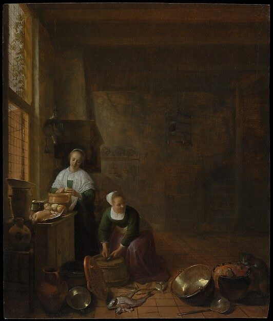
A Dutch kitchen as a working machine, with bodies arranged by task rather than by composition. Blocking reference.
Curated Hendrick Sorgh, ca. 1643. Oil on wood. The Metropolitan Museum of Art, Open Access. metmuseum.org/art/collection/search/437703
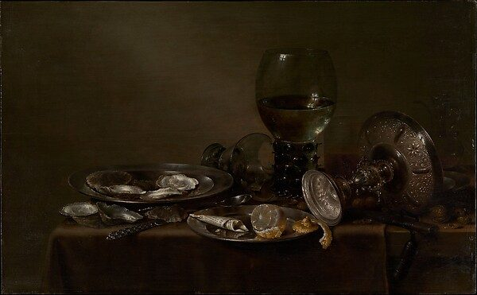
The aftermath, rendered with total seriousness. Heda gives a half-eaten meal the gravity of a portrait, which is permission to make our plates matter.
Curated Willem Claesz Heda, 1635. Oil on wood. The Metropolitan Museum of Art, Open Access. metmuseum.org/art/collection/search/438376
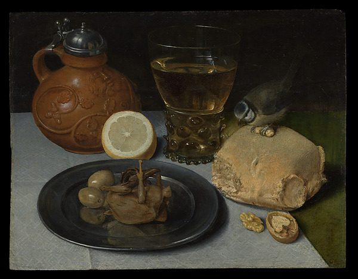
Flegel arranges modest food with formal care. Directly useful for the plating minigame, where the player is asked to make something plain look considered.
Curated Georg Flegel, probably ca. 1625 to 30. Oil on wood. The Metropolitan Museum of Art, Open Access. metmuseum.org/art/collection/search/436305
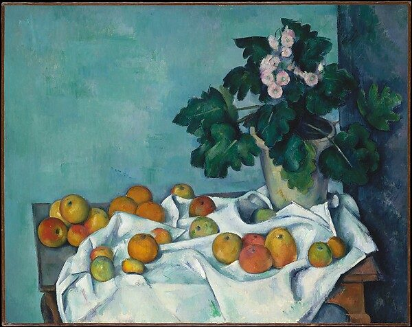
Cezanne's apples refuse to sit still. A reminder that our props should look placed by a person in a hurry, never by a level designer.
Curated Paul Cézanne, ca. 1890. Oil on canvas. The Metropolitan Museum of Art, Open Access. metmuseum.org/art/collection/search/435882
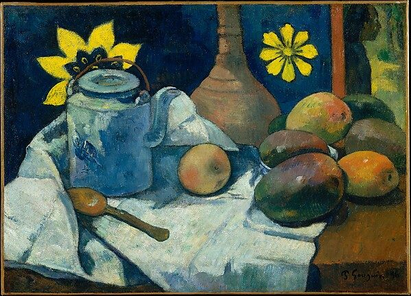
Gauguin's flattened color and hard edges. The stylized fallback if the photoreal direction proves too expensive to hold across a whole restaurant.
Curated Paul Gauguin, 1896. Oil on canvas. The Metropolitan Museum of Art, Open Access. metmuseum.org/art/collection/search/437999
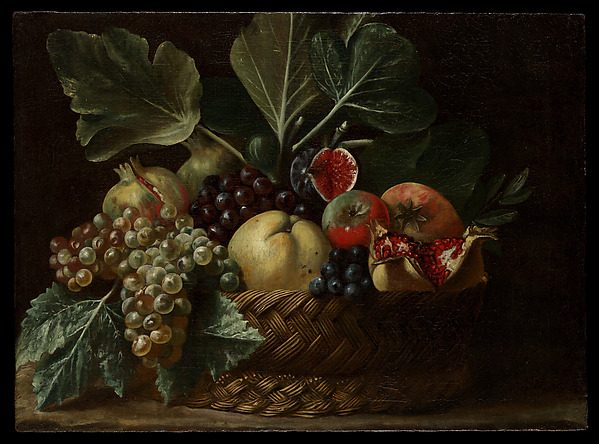
A basket lit like a saint. Good proof that one warm key light on ordinary food is the cheapest beauty available to us.
Curated Bartolomeo Cavarozzi, ca. 1620. Oil on canvas. The Metropolitan Museum of Art, Open Access. metmuseum.org/art/collection/search/816624
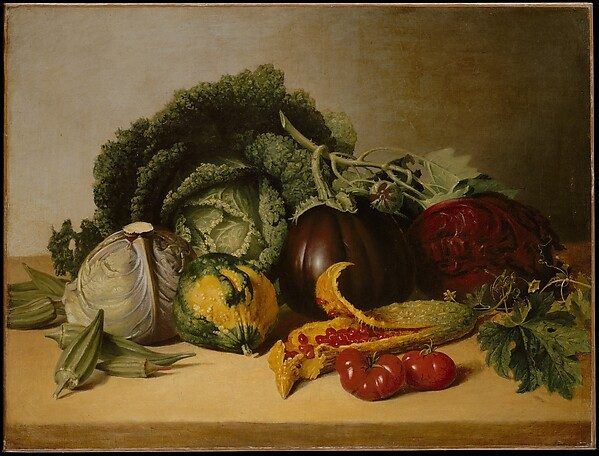
Vegetables with dirt still on them. Argues against making the food beautiful before it has been cooked.
Curated James Peale, ca. 1820s. Oil on canvas. The Metropolitan Museum of Art, Open Access. metmuseum.org/art/collection/search/11734
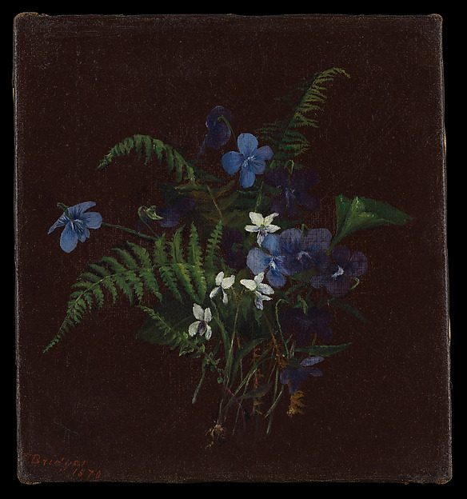
Bridges works small and quiet, and holds the eye anyway. Reference for the intimate scale of the between-service scenes.
Curated Fidelia Bridges, 1870. Oil on canvas. The Metropolitan Museum of Art, Open Access. metmuseum.org/art/collection/search/898372
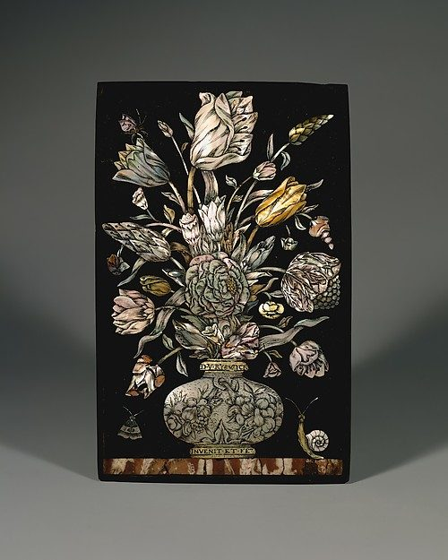
Inlaid stone pretending to be flowers. It is on the board as a warning: this level of finish reads as wealth, and this restaurant does not have any.
Curated Dirck van Rijswijck, 1662. Black marble inlaid with engraved mother-of-pearl and breccia marble, ebony frame. The Metropolitan Museum of Art, Open Access. metmuseum.org/art/collection/search/207551
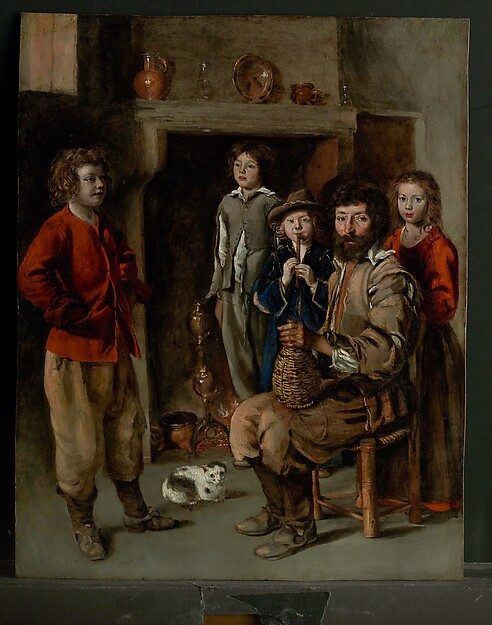
Le Nain paints a poor family looking straight out at you without apology. The tone we owe our characters: dignity first, hardship second, pity never.
Curated Antoine Le Nain, ca. 1640 to 48. Oil on copper. The Metropolitan Museum of Art, Open Access. metmuseum.org/art/collection/search/438779
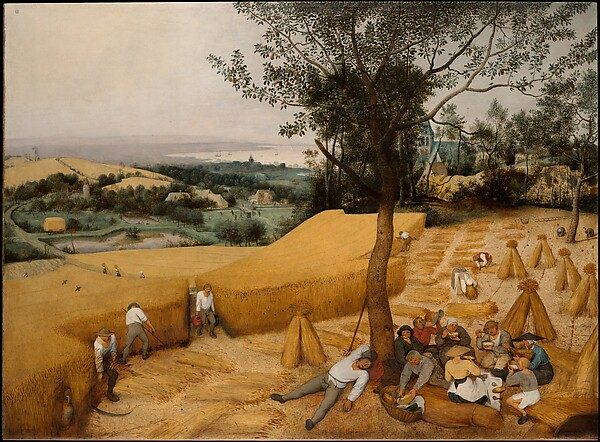
Bruegel's harvesters work and then eat under the same tree, in the same picture, and the meal is clearly the point of the labor. This is the entire structure of our game in one 1565 panel.
Curated Pieter Bruegel the Elder, 1565. Oil on oak. The Metropolitan Museum of Art, Open Access. metmuseum.org/art/collection/search/435809
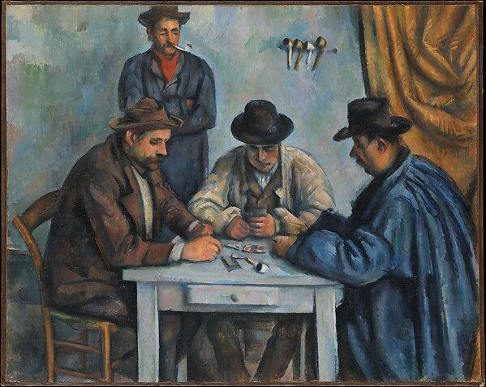
Two people, one table, total absorption. The two-player mode, painted.
Curated Paul Cézanne, 1890 to 92. Oil on canvas. The Metropolitan Museum of Art, Open Access. metmuseum.org/art/collection/search/435868
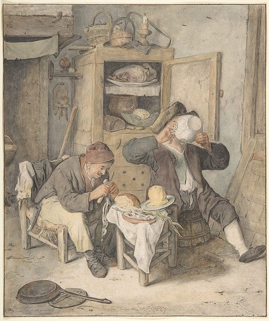
Dusart's kitchen is cluttered, unstaged and slightly chaotic, which is what a real service looks like and what our set dressing should imitate.
Curated Cornelis Dusart, 1687. Black and red chalk, brown, gray, blue, yellow, red washes. The Metropolitan Museum of Art, Open Access. metmuseum.org/art/collection/search/370463
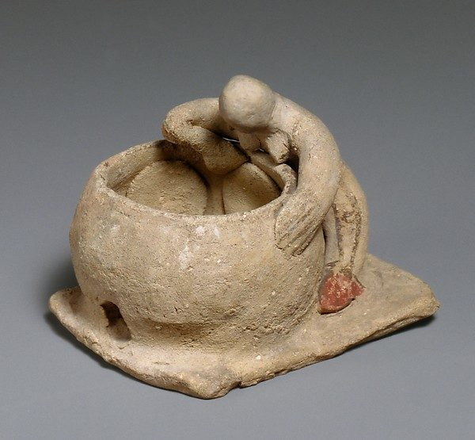
A terracotta woman baking bread, made around 600 to 480 BCE. It is on this board to make one point to the room: the subject of this game is roughly twenty-six centuries old.
Curated ca. 600 to 480 BCE. Terracotta. The Metropolitan Museum of Art, Open Access. metmuseum.org/art/collection/search/241310
Board 3 of 3
A walled night garden that two players tend from opposite sides. One player can see the garden and cannot hear it. The other can hear it and cannot see it. Everything that grows here needs both.
How this team read the six words. Collaboration as asymmetry. The six words read as: I have half the information and no way to get yours except by asking you well.
What this board is not. Not a puzzle game about relaying instructions. Both players are gardeners with real agency, not one player reading a manual to the other.
25 images · 9 of the world · 4 of the screen · 12 curated from the public domain · the brief asks for 20 to 40
Measured from the 13 generated plates, world and screen together, which define how this game looks. Percentages are the share of pixels each color owns.
Measured from the 12 curated works. These skew to paper and age, and that is the honest reading: they are on the board for form, motif and composition, not for color.
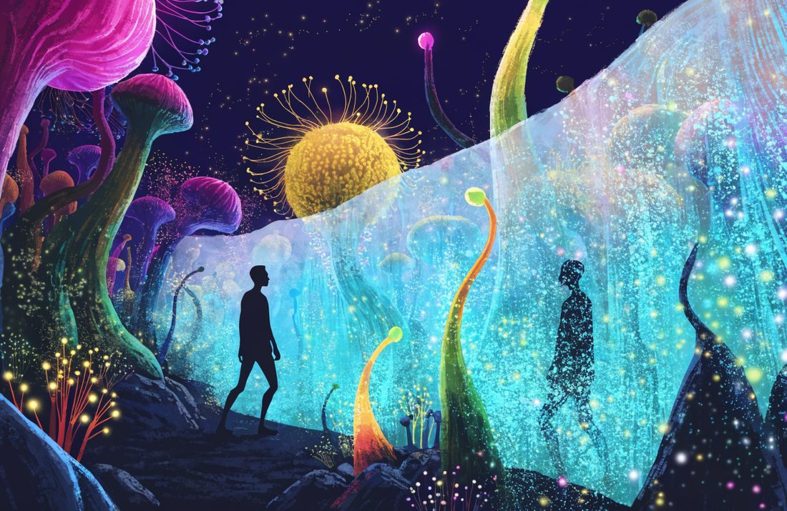
The core mechanic as a picture. Two players, one barrier, and light that passes between them when they cannot. Neither figure can finish the garden alone.
Generated Recraft V4.1 via Higgsfield, 21 September 2026. Palette locked to #131A3A, #3FE0C8, #E8C46A, #1E3B2A, #C63FA0 at generation time. Prompt: “Painterly speculative illustration: a night garden of bioluminescent spores, two silhouetted figures on opposite sides of a translucent wall of glowing cyan pollen, neither able to cross, deep indigo darkness, gold points of light.”
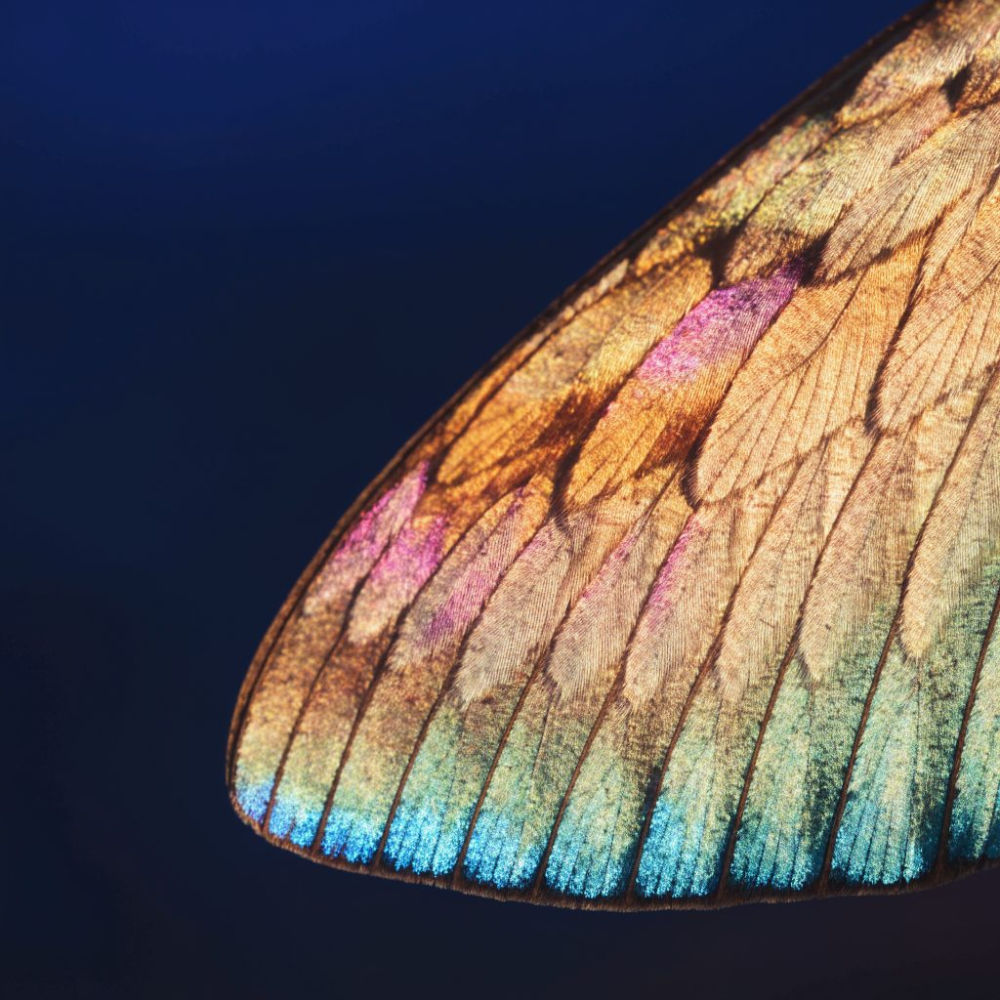
Wing structure at macro scale. The whole visual language is built from this: thin membranes that glow when something passes behind them.
Generated Recraft V4.1 via Higgsfield, 21 September 2026. Palette locked to #131A3A, #3FE0C8, #E8C46A, #1E3B2A, #C63FA0 at generation time. Prompt: “Macro image of a moth wing catching low gold light against deep indigo darkness, scales like stained glass, iridescent cyan along the edge, scientific and beautiful.”
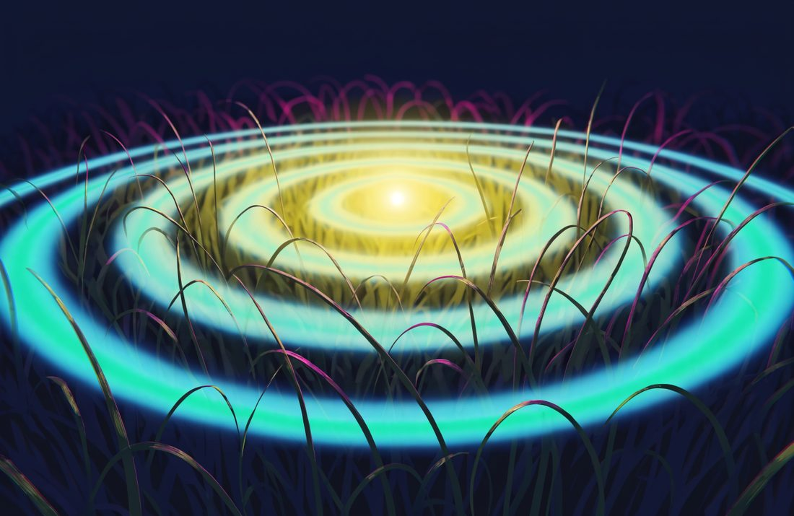
Sound made visible, which is the entire problem this game had to solve. The player who cannot see gets ripples; the player who cannot hear gets nothing here, and that asymmetry is the design.
Generated Recraft V4.1 via Higgsfield, 21 September 2026. Palette locked to #131A3A, #3FE0C8, #E8C46A, #1E3B2A, #C63FA0 at generation time. Prompt: “Sound rendered visible: concentric ripples of cyan light spreading outward through tall dark grass at night, bending the blades as they pass, no figures, deep indigo, painterly and quiet.”
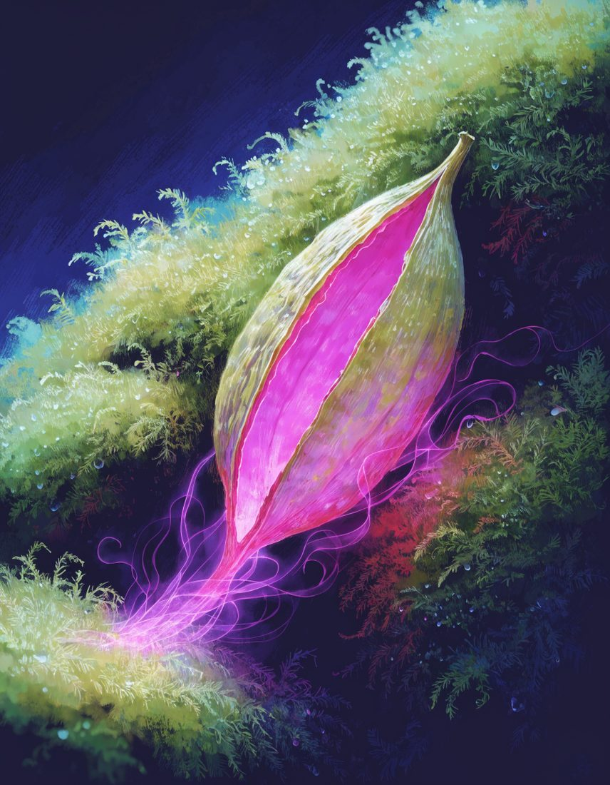
The reward state. Something closed opens and releases light, and both players see it even though only one of them caused it.
Generated Recraft V4.1 via Higgsfield, 21 September 2026. Palette locked to #131A3A, #3FE0C8, #E8C46A, #1E3B2A, #C63FA0 at generation time. Prompt: “A seed pod splitting open to release magenta light into deep moss shadow, botanical still life at night, dew, indigo background, painterly detail.”
Bioluminescent fungi as the ambient light source. Confirms the world can be lit entirely from the ground up, with no sky and no sun.
Generated Recraft V4.1 via Higgsfield, 21 September 2026. Palette locked to #131A3A, #3FE0C8, #E8C46A, #1E3B2A, #C63FA0 at generation time. Prompt: “A dense cluster of glowing fungi on wet bark at night, cyan and gold light bleeding into deep moss green, macro, painterly realism.”
Two lanterns joined by one thread of light across a dark garden. This is the map screen: you always know where the other player is, and never what they are looking at.
Generated Recraft V4.1 via Higgsfield, 21 September 2026. Palette locked to #131A3A, #3FE0C8, #E8C46A, #1E3B2A, #C63FA0 at generation time. Prompt: “Two small paper lanterns burning gold at opposite ends of a dark overgrown garden, joined by one thread of cyan light strung between them through the leaves. Night, indigo, painterly, quiet.”
Light held in the hands, lighting a face that stays unreadable. Our characters are silhouettes by design, because a player should be legible by behavior rather than by expression.
Generated Recraft V4.1 via Higgsfield, 21 September 2026. Palette locked to #131A3A, #3FE0C8, #E8C46A, #1E3B2A, #C63FA0 at generation time. Prompt: “A cupped pair of hands holding a small drift of glowing cyan spores, light leaking between the fingers and lighting the underside of a face that stays in shadow. Deep indigo, painterly.”
The garden as pure silhouette with the glow coming from somewhere inside it. Level design reference, and an argument for withholding the center until the end.
Generated Recraft V4.1 via Higgsfield, 21 September 2026. Palette locked to #131A3A, #3FE0C8, #E8C46A, #1E3B2A, #C63FA0 at generation time. Prompt: “A dense hedge maze at night rendered as pure silhouette against a faint cyan glow rising from somewhere inside it, deep indigo sky, one gold star. Graphic, painterly, almost flat.”
A network made visible by dew. The clearest metaphor on the board for two players holding one structure between them.
Generated Recraft V4.1 via Higgsfield, 21 September 2026. Palette locked to #131A3A, #3FE0C8, #E8C46A, #1E3B2A, #C63FA0 at generation time. Prompt: “Dew on a spider web at night, each droplet holding a point of cyan light, deep moss and indigo behind, macro, painterly realism. A network made visible.”
The single most important frame on this board. Left, the player who can see: lit, legible, gold and cyan. Right, the player who can hear: almost pure black with sound drawn as rings. Put these two halves side by side and the pitch needs no further explanation.
In-game Recraft V4.1 via Higgsfield, 21 September 2026. Palette locked to #131A3A, #3FE0C8, #E8C46A, #1E3B2A, #C63FA0 at generation time. Prompt: “Asymmetric two player split screen game capture: the left half shows a night garden lit and legible in cyan and gold, the right half is almost entirely black with sound rendered as concentric cyan ripples and nothing else visible.”
The map, and note what is missing from it. A few gold markers and large areas simply blank, because the map only knows what the two of you have already told each other. The interface withholds on purpose.
In-game Recraft V4.1 via Higgsfield, 21 September 2026. Palette locked to #131A3A, #3FE0C8, #E8C46A, #1E3B2A, #C63FA0 at generation time. Prompt: “Game map interface for a walled night garden, hand-drawn stylized plan view, only a few gold markers placed on it and large areas left blank and unknown, deep indigo background, minimal UI frame.”
Diegetic menu. Cyan runes growing along the veins of a leaf, so the interface is a living thing in the garden rather than a panel floating over it. If the UI can live in the world here, it should.
In-game Recraft V4.1 via Higgsfield, 21 September 2026. Palette locked to #131A3A, #3FE0C8, #E8C46A, #1E3B2A, #C63FA0 at generation time. Prompt: “Diegetic game interface: glowing cyan runes growing along the veins of a dark leaf, functioning as the menu itself, no floating panels, the plant IS the UI. Deep indigo night, macro, painterly.”
The hardest screen in the game and the reason it exists. This is the player who cannot see: almost pure black, the garden's shape implied only by sound rendered as expanding rings. Ship this badly and the game is a blindfold; ship it well and it is a sense.
In-game Recraft V4.1 via Higgsfield, 21 September 2026. Palette locked to #131A3A, #3FE0C8, #E8C46A, #1E3B2A, #C63FA0 at generation time. Prompt: “First person game view from the player who cannot see: the frame almost entirely black, the shapes of the garden suggested only by expanding cyan sound rings washing over unseen leaves and stems.”
Shaikh Zain al-Din, Calcutta, 1778: a thrush and a death's-head moth on one page, painted for a European patron by an Indian master. Night creature, daylight precision, and exactly the register we want for the creature codex.
Curated Shaikh Zain al to Din, dated 1778. Opaque watercolor and ink on paper. The Metropolitan Museum of Art, Open Access. metmuseum.org/art/collection/search/457758
Kiitsu gives the moth a whole field of irises and almost no detail. Composition reference for the wide contemplative shots.
Curated Suzuki Kiitsu, ca. 1850. Hanging scroll; ink and color on silk. The Metropolitan Museum of Art, Open Access. metmuseum.org/art/collection/search/53424
Struyk paints a moth as a specimen with no habitat at all. The codex entry treatment: isolate the creature, let the player study it.
Curated Nicolaas Struyk, early 18th to mid 18th century. Pen and black ink and watercolor, over touches of graphite. The Metropolitan Museum of Art, Open Access. metmuseum.org/art/collection/search/400112
Second Struyk plate, kept deliberately beside the first. Two of the same thing, slightly different, is how a player learns to tell species apart, and that is a core verb here.
Curated Nicolaas Struyk, early 18th to mid 18th century. Pen and black ink and watercolor, over touches of graphite. The Metropolitan Museum of Art, Open Access. metmuseum.org/art/collection/search/400116
Hollar, 1646, etched so finely the wings read as structure rather than pattern. Line-work reference for the UI iconography.
Curated Wenceslaus Hollar, 1646. Etching; first state of three. The Metropolitan Museum of Art, Open Access. metmuseum.org/art/collection/search/361543
Prang chromolithograph. The saturated gold and cyan on these plates are an 1860s printing technology producing exactly the color relationship our bioluminescence needs.
Curated Louis Prang & Co., 1862. Color lithograph. The Metropolitan Museum of Art, Open Access. metmuseum.org/art/collection/search/412718
The swallowtail plate, kept for its shape language: a silhouette identifiable at any size, which is what our creature designs have to achieve.
Curated Louis Prang & Co., 1860. Color lithograph. The Metropolitan Museum of Art, Open Access. metmuseum.org/art/collection/search/381609
The Dark Veinlet. Muted, brown, easy to overlook, and on the board on purpose, because a world of only spectacular creatures has no scale.
Curated Louis Prang & Co., 1862. Color lithograph. The Metropolitan Museum of Art, Open Access. metmuseum.org/art/collection/search/381610
An underwing hides bright color under dull cover and shows it only in flight. That is a mechanic, not just an animal.
Curated Louis Prang & Co., 1862. Color lithograph. The Metropolitan Museum of Art, Open Access. metmuseum.org/art/collection/search/412753
Callithea Sapphira, the most saturated plate in the series. The upper limit of our palette, used once a game.
Curated Louis Prang & Co., 1860. Color lithograph. The Metropolitan Museum of Art, Open Access. metmuseum.org/art/collection/search/381611
Kept for its pattern grammar: repeated marks that read as a single surface at distance and as detail up close. Our texture budget depends on this working.
Curated Louis Prang & Co., 1862. Color lithograph. The Metropolitan Museum of Art, Open Access. metmuseum.org/art/collection/search/412754
The Painted Lady closes the series. A common butterfly given the same care as the rare ones, which is the note we want on ordinary creatures in the garden.
Curated Louis Prang & Co., 1862. Color lithograph. The Metropolitan Museum of Art, Open Access. metmuseum.org/art/collection/search/401243
| Criterion | What a 5 looks like here |
|---|---|
| Visual Cohesion | Each board holds one light source, one weather and one distance. Rope is lit by cold sky and one warm object. The Last Sitting is lit by tungsten and heat lamps and never by daylight. Signal Garden is lit entirely from the ground up. You can put any plate from one board next to any other plate from the same board and they agree about what time it is. |
| Curation & Justification | Sixty-seven plates, sixty-seven reasons, each one naming the design problem the image solves rather than the mood it evokes. The test to apply to your own: replace “this feels right” with a sentence a programmer could act on. |
| Color & Palette Development | Each board was generated against a locked five-color set, then measured afterward to check the lock held. The measured strip is printed next to the plates so the claim is falsifiable. Three distinct languages: cold gray with one rust accent, tungsten browns with chili red, indigo with two light colors that exist only because something is glowing. |
| Presentation & Accessibility | Wall labels, not a collage. Every plate is titled, justified and sourced. The page reads on a phone, prints, needs no JavaScript, and every external link resolves. |
The reference plates drag the palette toward paper. Measured across all images, every board comes out browner and lighter than it looks, because four hundred years of aged paper and varnish is in the average. That is why the strips are split. When you present, show the look palette and say plainly that the historical plates are there for composition and motif.
The generated plates are disclosed on purpose. This is tier two under the framework we read in Session 14: a person directing a generative model inside a normal pipeline, with the direction visible. Tier three, a prompt standing in for your own seeing, is the thing this course forbids, and the way you prove you are not doing it is to publish the prompt and the reason next to the picture.
All three of these are games, and the screens test applies to all three equally. Rope is a game. The Last Sitting is a game. Signal Garden is a game. Each one therefore has to answer what the player is looking at and what the player does, and none of the three gets a pass for being beautiful. The story below is about the board where the failure happened to be visible, not about the only board that could have had it.
Signal Garden was one screen for an hour, and it was visibly the weakest board of the three. The generation calls for its three most important frames failed, and what failed was exactly the set that answers the question the board exists to ask: the asymmetric split where one half is lit and the other is nearly black, the map that only knows what the two of you have told each other, and the leaf whose veins are the menu. With one screen the board was twenty beautiful pictures of a mood. With four it is a game. The lesson survives the fix, so it is left here on purpose: count your screens before you fall in love with your photographs, because a board can look finished and still be missing the only images that explain what the player does.
One source was broken and is not on this page. The Met's own image asset for object 56235, another impression of the Hokusai climbing print, returns a 404. A second impression, object 55281, is live and is what you see on the Rope board. Check your links before you submit; a dead source is an unsourced image.